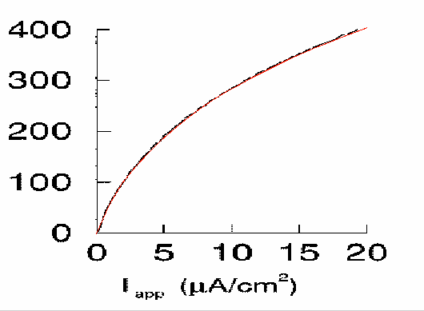
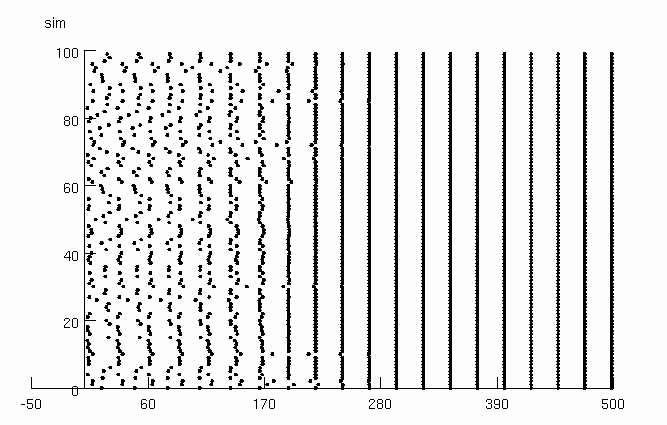
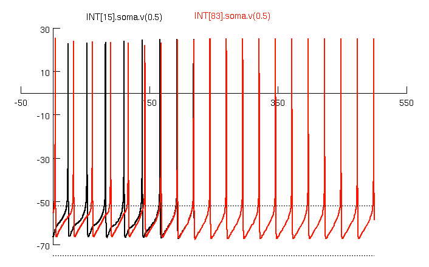

Representative Simulations for
Wang, X.-J. and Buzsaki G. (1996) Gamma oscillations by synaptic
inhibition in a hippocampal interneuronal network. J. Neurosci. 16,
6402-6413.
Download archive and compile the mod files (mknrndll in mswin and mac,
nrnivmodl in linux/unix) and begin by starting mosinit.hoc (double
click in mswin, drag and drop onto nrngui on mac, or "nrngui
mosinit.hoc" in linux/unix). Press either figure button to generate:

Fig. 1a
Small discrepancies between gif background in Grapher and the
simulation is probably due to slightly incorrect scaling and origin of
the gif.

Default parameters replicate Fig. 3A (phi0=5; current injection amp0=1
muA/cm2).

Fig. 3B parameters are (phi0=3.3; amp0=1.2); 3C (phi0=2.0; amp0=1.4).
Note: this simulation takes a little more than 3 minutes on a 2GHz
linux machine, under a minute on a 2012 MacBook Pro (laptop).
Start the simulation by pressing the Run button or the Init&Run
button. When the simulation stops, press the "Spike plot" button and
the "Plot cells A&B" button.
Parameter control panel permits change in parameters as follows:
phi phi0
Current inj. amp0
Run redundant with run button on run control
Randomize rerandomizes initial conditions (Chosen as a uniform
distribution between -68 and -55 mV; this range was
chosen to give sync at approximately the cycle seen in
the paper.)
Spike Plot Put up a graph of spike times (Note that you can stop
simulation, put up a graph, and restart. This graph
is only a snapshot and will not be updated.)
Plot cells A&B Overlay 2 cells' voltage plots. Cell # chosen below
must be between 0 and 99. Horizontal lines are drawn
at -52 and -75 mV to compare with right-side graphs of
Fig. 3 in paper.
Cell A Choose cell to plot.
Cell B Choose other cell to plot.
Technical notes:
In the original paper, current injection is given in units of mA/cm2.
Here we have chosen a cell size of 100um/cm2 so that nA is equivalent
to mA/cm2.
In the original paper, phi directly alters the time constant as a
factor in the differential equation. In this implementation,
phi(phi0) alters celsius appropriately.
Bill Lytton developed the fig 3a simulation and model
descriptions. Michael Hines created the fig1a gui.
Changelog
---------
20140821 ModelDB admininstrator: updates to run on mswin
20220520 Updated MOD files to contain valid C++ and be compatible
with the upcoming versions 8.2 and 9.0 of NEURON.